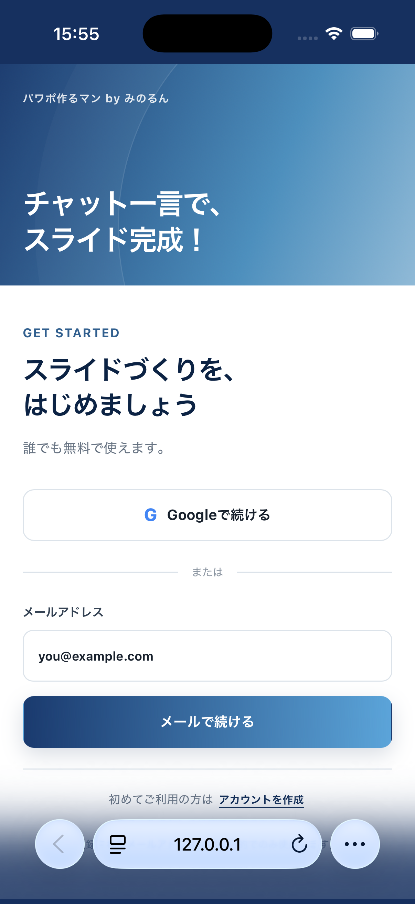

実機の Before / After
iPhone 17 Simulator（Safari）で撮ったものです。


いただいた4点への対応
| ご指摘 | 対応 |
|---|---|
| 円の装飾 | 削除しました（.auth-brand::after ごと廃止）。グラデーション1枚だけになっています |
| グラデーション | ログイン後のヘッダーと同じ 左→右（#1a3a6e → #5ba4d9） に変更。斜め118度から水平になりました |
| 上下の固定 | ページ全体のスクロールを廃止し、ログイン後と同じ固定レイアウトに。スクロールで背景がずれません |
| タイトル | 「チャット一言で、スライド完成！」をやめ、パワポ作るマン を34pxで主役に |
| 白い面の要素過多 | GET STARTED ／ 見出し ／ リード文の3行を削除。代わりにご指定の一言を1行だけ置きました |
白い面に置いた一言
いただいた文言をそのまま使っています。Googleボタンのすぐ上に、中央寄せで1行だけ。
チャット一言でプレゼン資料を作ろう！
ヒーローにあった「AIと話すだけで、プレゼン資料ができます。」はモック段階の案なので、ご指示どおり入れていません。
固定レイアウトの作り方
ログイン後（App.tsx の h-[100dvh] flex flex-col）と同じ構造に合わせました。
@media (max-width: 840px) {
- .auth-page { display: block; min-height: 100dvh; }
- .auth-panel { display: block; min-height: calc(100dvh - 214px); }
+ .auth-page { display: flex; flex-direction: column; height: 100dvh; overflow: hidden; }
+ .auth-brand { flex: none; }
+ .auth-panel { flex: 1; min-height: 0; overflow-y: auto; display: flex; }
+ .auth-shell { margin: auto; }
}
ページ自体は動かず、フォーム面だけが内側でスクロールします。これで背景が常に画面の縁と地続きになります。
中央寄せに place-items:center ではなく margin:auto を使っています。 前者は中身が画面より高いときに上端が切れてスクロールで戻せなくなりますが、後者は余白が負にならないので切れません。小さい端末でも全項目に手が届きます。
確認したこと
| 確認項目 | 結果 |
|---|---|
| ESLint | エラーなし |
| テスト | 35件すべて通過 |
| 最初の画面（iPhone） | 上下の縁がログイン後と同色でつながる |
| メール画面（iPhone） | ヒーローが消えてもレイアウトが崩れない |
| PC幅（1280px） | 左面はタイトルのみ、右面はフォーム中央寄せ |
| 触っていない5スタック | すべて No changes detected |
| PawapoWeb の差分 | Lambdaのイメージ更新1件のみ（作成0・削除0・置換0） |
実装後、フォームが上寄せのままだと下に大きな余白が残ったため、上下中央へ寄せています（Before/AfterのAfterは調整後）。